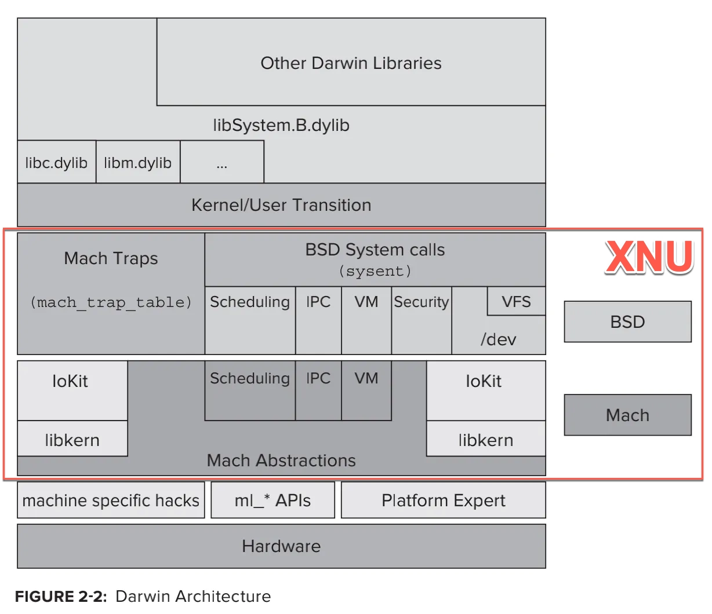
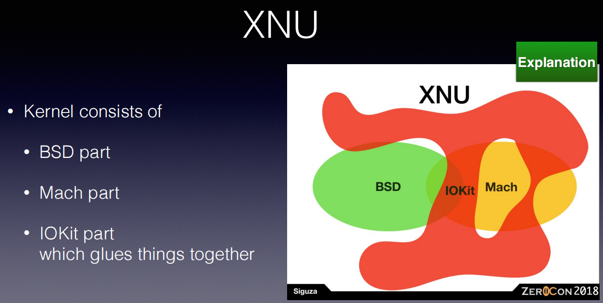
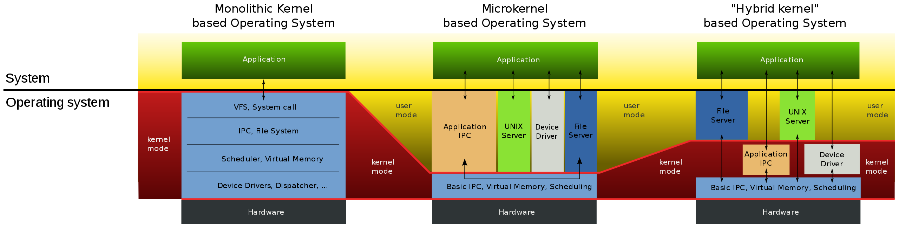

XNU
XNU= X is Not Unix- 相关名词
POSIX=Portable Operating System InterfaceSMP=Symmetric MultiProcessing
- 是什么：一个混合内核（操作系统）
- 解释：
Mach是微内核（Microkernel） +BSD是宏内核（Monolithic Kernel） =XNU是一个混合架构（Hybrid kernel）
- 解释：
- 概述
- 英文
- XNU kernel is part of the Darwin operating system for use in macOS and iOS operating systems.
- 中文
- XNU是：iOS（和tvOS、watchOS）的（操作系统）内核
- XNU也是Darwin的一部分
- Darwin是MacOS的操作系统内核
- 英文
- 架构
- Darwin的核心是XNU
- 
- XNU架构内部关系
- 
- XNU架构细节
- Darwin的核心是XNU
- 包括=组成
- 概述
XNU=Mach+BSD+libkern+I/O Kit- 最初的：
XNU=Mach v2.5+BSD v4.3 - 后续的：
XNU=OSFMK v7.3+FreeBSD
- 最初的：
- 详解
- 微内核：
Mach- 作用
- 早期用于（
OS X Server中的）Apple的MkLinux项目
- 早期用于（
- 包含内容
IPCMemoryParallel ExecutionReal-Time SupportConsole I/OSecurity
- 作用
- 宏内核：
BSD- 包含内容
- 进程和线程
POSIX Thread Support=BSD Thread Model=BSD线程模型=pthreadsIPC
- 文件系统
Virtual FileSystem=虚拟文件系统
- 网络
Networing= 网络协议栈
- 其他
- 进程和线程
- 包含内容
IOKit=I/O Kit=IO Kit- 设备驱动框架
- 一个实现的面向对象的设备驱动API
- 凭借
libkern提供的底层支持，驱动程序可以使用C++实现。借助于C++的面向对象特性，外部在创建驱动程序时会节省很多成本。
- 设备驱动框架
libkern- 一个内建的 C++ 库
- 用于支持 C++ 运行时
- 有了它内核的很多高级功能都可以使用 C++ 编写
- 一个内建的 C++ 库
- 微内核：
- 概述
- 目标
- 实现既有微内核(Microkernel)的灵活性，又有宏内核(Monolithic Kernel)的良好性能
- 微内核(Microkernel)指的是：
Mach- 功能定义比较清晰
- 内存管理
- 进程间（和处理器间）通信（IPC）
- 其他低级操作系统功能
- 在操作系统和底层硬件之间，提供了一个有用的隔离层
- 功能定义比较清晰
- 宏内核(Monolithic Kernel)指的是：
BSD- BSD是一个精心设计的、成熟的操作系统，具有许多功能。
- 事实上，当今大多数商业UNIX和类UNIX操作系统都包含大量的BSD代码。
- BSD还提供了一组行业标准API
- 微内核(Microkernel)指的是：
- 实现既有微内核(Microkernel)的灵活性，又有宏内核(Monolithic Kernel)的良好性能
- 相关
- 微内核（Microkernel） vs 宏内核（Monolithic Kernel） vs 混合架构（Hybrid kernel）
- 说明：理解这几种内核的关键是需要注意内核模式和用户模式占据的范围
- 对比
- 
- 微内核（Microkernel） vs 宏内核（Monolithic Kernel） vs 混合架构（Hybrid kernel）
- 相关名词

XNU源码
- XNU源码
- 旧：opensource.apple.com
- 新：github.com
- XNU代码核心部分=代码树
- config - configurations for exported apis for supported architecture and platform
- SETUP - Basic set of tools used for configuring the kernel, versioning and kextsymbol management.
- EXTERNAL_HEADERS - Headers sourced from other projects to avoid dependency cycles when building. These headers should be regularly synced when source is updated.
- libkern - C++ IOKit library code for handling of drivers and kexts.
- libsa - kernel bootstrap code for startup
- libsyscall - syscall library interface for userspace programs
- libkdd - source for user library for parsing kernel data like kernel chunked data.
- makedefs - top level rules and defines for kernel build.
- osfmk - Mach kernel based subsystems
- pexpert - Platform specific code like interrupt handling, atomics etc.
- security - Mandatory Access Check policy interfaces and related implementation.
- bsd - BSD subsystems code
- tools - A set of utilities for testing, debugging and profiling kernel.
查看自己的xnu版本
iPhone7
对于自己的越狱手机，此处的iPhone7，去查看对应的xnu的版本：
➜ ~ ssh root@192.168.0.33
iPhone7:~ root# uname -a
Darwin iPhone7 19.6.0 Darwin Kernel Version 19.6.0: Sat Jun 27 04:35:37 PDT 2020; root:xnu-6153.142.1~4/RELEASE_ARM64_T8010 iPhone9,1 arm64 D10AP Darwin
此处被测的已越狱的iPhone的xnu是：
xnu-6153.142.1
去官网找对应版本的代码：
xnu Source Browser (apple.com)
没看到这个版本
-》只能找到，最接近的版本：
- xnu-6153.141.1.tar.gz
可下载下来，供后续参考研究。
iPhone8, iOS 15.1
iOS 15.1，iPhone8的信息：
iPhone8-150:~ root# uname -a
Darwin iPhone8-150 21.0.0 Darwin Kernel Version 21.0.0: Sun Aug 15 20:55:55 PDT 2021; root:xnu-8019.12.5~1/RELEASE_ARM64_T8015 iPhone10,1 arm Darwin
中，就有：
xnu-8019.12.5~1/RELEASE_ARM64_T8015
其中xnu就是：iOS的内核
版本是：8019.12.5